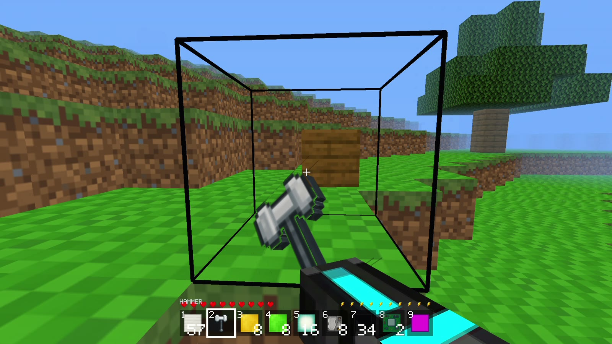
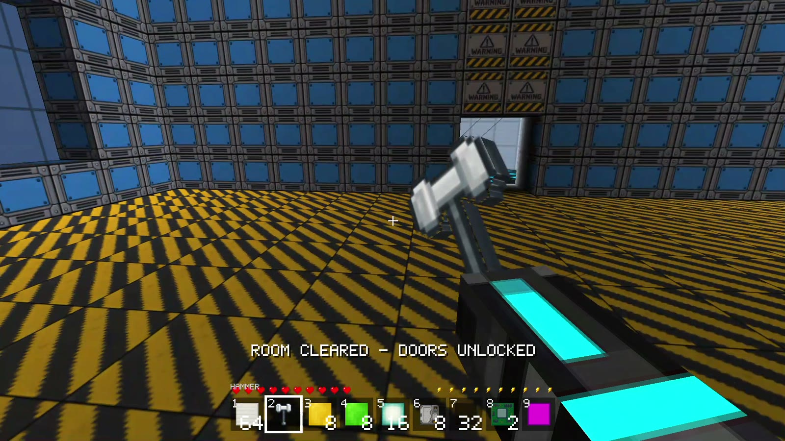
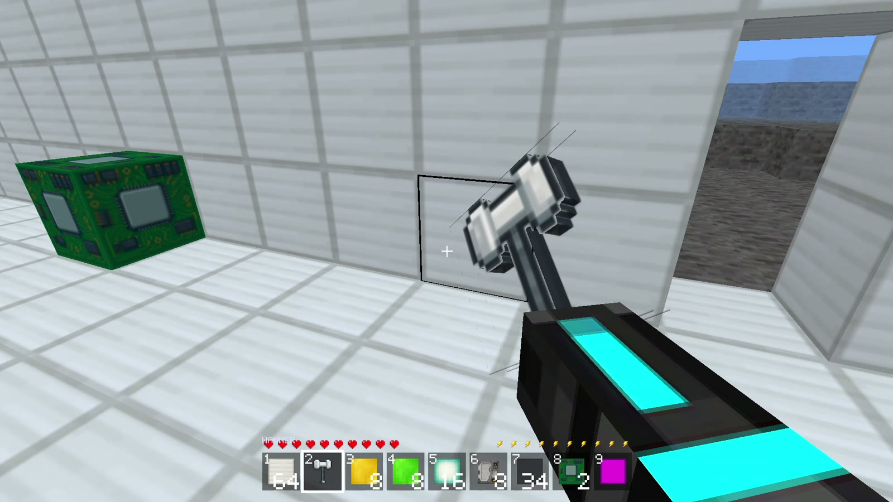
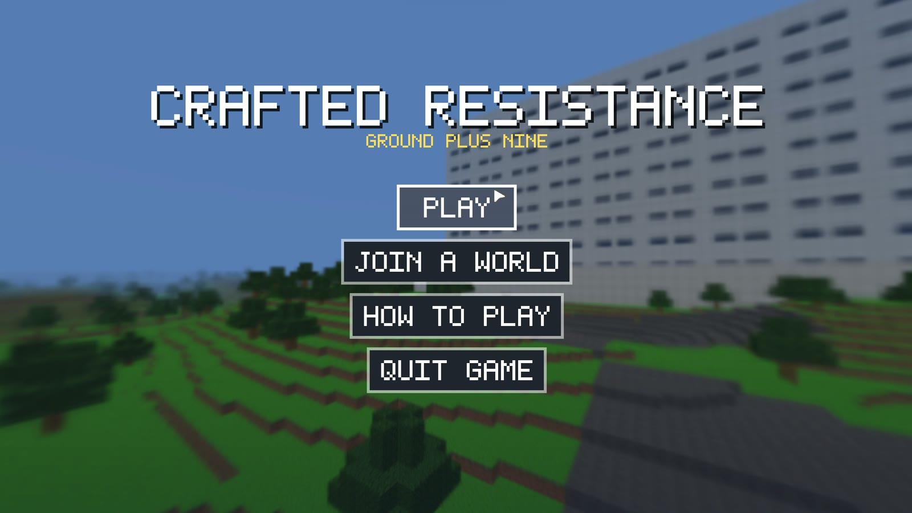

Drop in
Start outside the facility with nothing. The only way is in.
Under active development
Survive. Build. Resist.
A first-person voxel survival game inside a ten-floor containment facility. Clear 100 rooms, break the spawners that keep each door locked, fight the guardian waiting on every floor, and ride the elevator toward the Core. Mine, craft, upgrade, and bring a friend-shaped bot back online.
Play now launches the desktop build — requires Crafted Resistance to be installed. Windows, macOS, Linux and Android builds are on the downloads page.
The facility
Crafted Resistance is set in a maintained sci-fi containment facility, not a ruined one. Each floor has ten rooms with their own materials and purpose: storage, research, medical, server, cryo, nanite, antimatter, shield containment, and more. The doors stay locked until you break the spawners inside. Guardians drop elevator keycards, so clearing a floor is only half the job. Outside, a semi-transparent blue dome keeps a city skyline out of reach until the terrace guardian falls.

In-game
Real frames from the current build: the lockdown ends, a cleared room, and the title sequence that starts every run.



The loop
Every floor is a lockdown puzzle wrapped around a fight. Clear the rooms, break the guardian, take the elevator, and do it again with better gear.
Start outside the facility with nothing. The only way is in.
Break all four spawners in a room to stop its bots and unlock the doors. Every room has its own material theme and secret.
Each floor ends with a guardian using its own kit: poison lobs, missiles, shockwaves, landmines, lifesteal, and reinforcements.
Use the 2x2 inventory grid and the 3x3 advanced table. Build doors, lights, chests and ladders; upgrade armour and weapons.
Mine the block world outside, place what you need, and scan for vaults, shield cores, chests and loot hidden in the walls.
Floor guardians drop keycards. Spend one at the elevator to open the next floor. The final 600 HP guardian waits on the terrace above the Core.
Progression
Progress is the facility itself. Each guardian keycard opens another elevator level, another set of rooms, and another chance to find the gear that makes the next floor survivable.
Development log
Build status
Community
The facility is still being tuned. Follow the dev log for new rooms, bosses and balance changes, then report bugs and share ideas with the people playing the current build.
Questions
A first-person voxel survival game set in a ten-floor sci-fi containment facility. You mine, craft, fight bots and guardians, clear rooms, and ride the elevator from the ground floor to the Core.
No. It is an active beta with a complete 100-room facility run, but balance, content and polish are still being added.
Break the four spawners in a room to unlock its doors. Clear the floor's guardian, take its keycard to the elevator and spend it to open the next level. The final guardian waits on the terrace after room 100.
Windows, macOS, Linux and Android. Android uses the APK and on-screen touch controls; iOS is not supported yet.
Not in the current build. It is a single-player game with multiple local world saves.
Yes. Join the Discord and report bugs, balance issues or ideas for the facility.
The current beta has 100 rooms, ten floor guardians and a full elevator run to the Core. Download the latest build, or join the Discord and help shape the next floor.